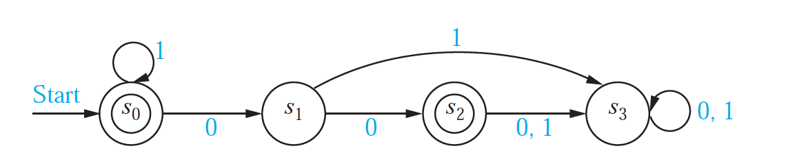

10 What Can Turing Machines Do?
10.1 Turing Computable Languages
A language \(L\) is Turing computable (also called decidable) if it is recognized by some Turing machine that always halts, that is,
- \(L = L(M)\) for some Turing machine \(M\).
- \(M\) halts on every input. (If \(x\in L\), them \(M\) halts in an accepting state on input \(x\). If \(x \not\in L\), then \(M\) halts in a rejecting state on input \(x\).)
Show that every regular language is Turing computable.
[Hint: What must you do to demonstrate this?]
Construct a Turing Machine that recognizes the same language as this DFA, using your method from the previous problem.

10.2 Variations on the Turing Machine
There are many variations on the Turing machine. Here are some examples.
Instead of having a single tape, a Turing machine can have multiple tapes.
Instead of being 2-way infinite, the tape(s) can have a left end. These are called 1-way infinite tapes.
Turing machines may be required to move the head at each step (so “stay” is not an option).
Multi-track tapes aren’t really a variation, but a handy way of thinking about a tape alphabet. (And some simulators makes this easy to do.) Since the tape alphabet may be anything, if we want to simulate writing two symbols from \(A\), we can use a tape alphabet of \(A \times A\) or even \(A \cup (A \times A)\). One element of \(A \times A\) represents two elements from \(A\) (one on the “top track” and one on the “bottom track”).
Instead of having a 1-dimensional tape, a tape can be a 2-dimensional grid of cells. The read/write head can move up and down in addition to left and right.
Each of these variations is equivalent to the standard Turing machine with one 2-way infinite tape. So are many other models of computation. This has led to the so-called Church-Turing Thesis. Here is one statement of that thesis:
A function on the natural numbers is computable by a human being following an algorithm, ignoring resource limitations, if and only if it is computable by a Turing machine.
Write a 2-tape Turing machine to do parenthesis matching. It should run much faster than a 1-tape Turing machine for the same task. How will you take advantage of the second tape?
Give a high level description of how to convert a Turing machine with 2-way infinite tape into a Turing machine with a 1-way infinite tape.
Give a high level description of how to convert a 2-tape machine into a 1-tape machine.
10.3 The Halting Problem
The Halting Problem is a famous example of a language that is not Turing computable. By the Church-Turing Thesis, this would mean it is not computable by any means.
Why is it called the Halting Problem, you ask, instead of the Halting Language? This goes back to a description of languages as answers to yes/no questions. Each such problem (ie, language) an be described by an instance and a question. Here are some examples:
Euler
- Instance: A Graph \(G\)
- Question: Does \(G\) have an Euler Circuit?
3-Colorability
- Instance: A Graph \(G\)
- Question: Is \(G\) 3-colorable? (Can we color the vertices with 3 colors so that no adjacent vertices are the same color.)
SAT
- Instance: A first order logical formula \(\varphi\) (made with \(\land\), \(\lor\), \(\neg\) and some logical variables).
- Question: Is \(\varphi\) satisfiable? (Can we set the variables to TRUE/FALSE in a way that makes the entire formula true?)
Implicit in each of these descriptions is some encoding scheme by which the objects mentioned in the instance are coded as bit strings. Typically, if we are only interested in whether a problem is Turing computable or not, it does not matter which coding scheme is used as long as it is systematic.1
An entire book (Garey and Johnson 1979) of such problems (and whether or not they were NP-complete) was produced in the 1970’s by Garey and Johnson and popularized this description. So you will see languages referred to as problems throughout the CS literature.
Halting Problem
- Instance: A Turing Machine \(M\) and an input string \(x\).
- Question: Does \(M\) halt on input \(x\)? (This is written \(M(x) \downarrow\).)
10.3.1 The Halting Problem is not Turing Computable (sketch)
Here is a high level sketch of the proof that the Halting Problem is not Turing computable.
Choose particular encoding of a Turning machines as binary strings. (This can clearly be done since our Turing machine simulators do this using ASCII strings and ASCII can be encoded in binary.)
- Decision problems typically envolve specifying an encoding. For EULER and 3-COLORABILITY, we would need to specify how we encode our graphs, for example. The details of the encoding matter very little as long as we can extract the information we need.
Code instances of the Halting Problem as \(\langle M \rangle\#\langle x \rangle\), \(\langle M \rangle\) is the encoding of \(M\) and \(\langle x \rangle\) is a binary encoding of its input \(x\).
- The only important thing here is that we can tell where the encoding for the machine halts and the encoding for the input begins.
Suppose the Halting Problem is Turing Computable by a machine \(H\). Let’s use it to build a new machine \(K\) that works as follows.
on input \(x\), create tape contents \(x\#x\) and move the tape head back to the left end of the tape. We can do this by moving back and forth on our tape to copy one symbol at a time – sort of like our parenthesis matching machine.
Now run machine \(H\) with two modifications.
change all accepting states to the state LOOP and and add the instruction
LOOP * * r * ; this will cause the machine to move right forever.Change all rejecting states into accepting states.
So that’s our high level description of the Turing machine \(K\). How does this help us? Let’s consider \(H(\langle K \rangle\#\langle K \rangle\)). (We’re going to show the \(H\) gets the wrong answer.)
Exercises
Suppose \(H(\langle K \rangle\#\langle K \rangle)\) accepts.
What does this tell us about \(K\) because of how \(H\) is defined?
What does this tell us about \(K\) because of how we defined \(K\)?
Suppose \(H(\langle K \rangle\#\langle K \rangle)\) rejects.
What does this tell us about \(K\) because of how \(H\) is defined?
What does this tell us about \(K\) because of how we defined \(K\)?
Combine these results to explain why the Halting Problem is not Turing Computable.
10.4 Running time of a Turing machine
The running time of a Turing machine on input \(x\) is the number of steps before it halts. The conversions above typically change the running time, but machines that run in polynomial time are converted into machines that run in polynomial time (typically with a different degree polynomial).
10.4.1 P and NP
This provides a formal definition of the famous set \(P\). \(P\) is the set of all languages that can be recognized by a Turing machine in polynomial time, that is, the number of steps the machine takes on an input of length \(n\) is bounded by \(p(n)\) for some polynomial \(p\).
A non-deterministic Turing machine can have multiple transitions from the same state/tape contents configuration. A non-deterministic TM accepts an input \(x\) if there is a way of choosing transitions that causes the machine to halt in a halting state. (This is similar to how non-deterministic automata were defined). \(NP\) is the set of all languages that can be recognized by a non-deterministic Turing machine in polynomial time.
The “\(P\) vs. \(NP\) question” is whether \(P\) and \(NP\) are the same or different. To date, this question is unresolved.2